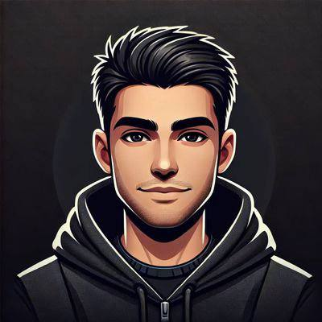

Projects
Web3 Projects

Rstory
Community growth and engagement strategy for a storytelling platform focused on empowering creators through blockchain technology.
Work included:
- Community engagement campaigns
- Content promotion
- Awareness building

OyaPick
Supported community engagement and trust-building initiatives while helping new users understand the platform and participate early.
Work included:
- Community discussions
- User onboarding
- Growth support
Meme Coin Growth Campaigns
Worked with early-stage meme coin projects to boost awareness, drive engagement, and increase community participation through coordinated marketing campaigns.
Led a raiding and shilling team to boost project visibility on X (Twitter)
Web Development


Personal Portfolio Website for a Web3 Builder
View SiteClient Type: Personal Brand
What they needed: A clean portfolio website to showcase their brand, projects, and online presence
What I built: Responsive portfolio website tailored for a Web3 persona
Tech Used: HTML, CSS
- Mobile Responsive
- Fast Loading
- Social / Contact Integration


Personal Portfolio Website for a Web3 Builder
View SiteClient Type: Personal Brand
What they needed: A clean portfolio website to showcase their brand, projects, and online presence
What I built: Responsive portfolio website tailored for a Web3 persona
Tech Used: HTML, CSS
- Mobile Responsive
- Fast Loading
- Social / Contact Integration
🔒 Rstory Exclusive
Some of my work goes deeper than public case studies. This section contains exclusive breakdowns and strategies used in Web3 community growth.
🔒 Content hidden for Rstory users only
🧠 Rstory Private Growth Case Study
Rstory is a storytelling platform built around creator empowerment and blockchain-based engagement. My role focused on driving awareness, improving engagement loops, and strengthening community retention.
This section contains real breakdowns of strategies I use in Web3 community growth, content creation, and engagement systems across different projects.
📌 Core Focus Areas
- Community engagement systems for early-stage Web3 projects
- Content-driven growth strategies (organic reach + narrative building)
- Raiding and visibility amplification techniques
- How attention cycles are created in crypto communities
⚙️ Content Strategy Breakdown
Most of the content I create is built around one idea: attention is not random, it is engineered through timing, emotion, and repetition.
- Using storytelling to make projects feel alive, not just technical
- Turning simple updates into viral engagement triggers
- Structuring posts to encourage replies, not just likes
- Building narrative consistency across all community messages
🚀 Example Execution Style
- Daily engagement loops (consistent visibility in community)
- Reply-driven amplification instead of broadcast posting
- Community-first messaging instead of product-first messaging
- Creating urgency through timing of content drops
🧩 Key Insight
In Web3, the strongest projects don’t always win because of technology, they win because they control attention, narrative, and community emotion at the right time.
🔒 Note
This is a simplified version of real strategies used across multiple Web3 growth campaigns. Full execution details are reserved for active Rstory users.
My Services
- Community Management
- Growth Campaigns
- Shilling & Promotion
- KOL collaboration
Managing and moderating communities on Telegram, Discord, and Twitter
Designing campaigns that increase engagement, attract new users,
and build strong project awareness
Strategic promotion across crypto communities to create hype and
attract attention to projects.
Connecting projects with influencers and key opinion leaders
in the Web3 ecosystems.